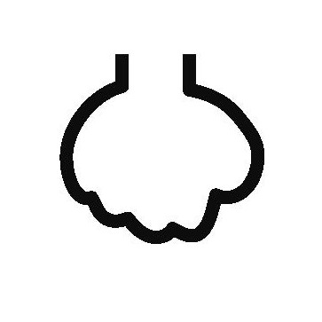
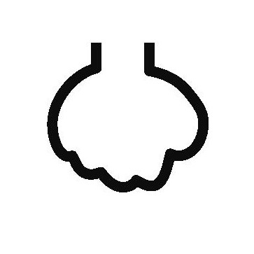
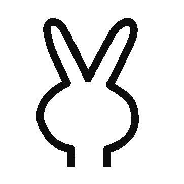
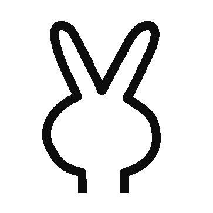
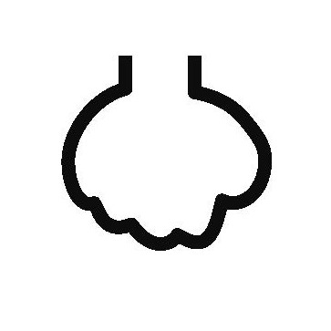
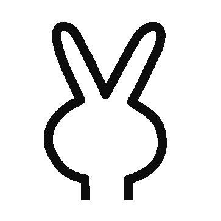

マシンの手
あなたの手（選んでください）
 


| AI じゃんけんマシン | Tweet |


| ■解説■ このじゃんけんマシンはあなたが手を選ぶ前に次の手を決めています．じゃんけんを繰り返すうちにあなたの手の癖を読み取って徐々に強くなっていきます．最初に30回勝ったほうが優勝です．勝負しましょう． ■詳細■ 篠本 滋「情報処理概論 - 予測とシミュレーション」（岩波書店）6．5節「じゃんけんマシンを作ってみよう」 pp101-107． PC用ウェブアプリ． Cプログラム． ウェブアプリに関するお問い合わせやコメントは篠本 滋までご連絡ください． |
| version 1.1 : 2018/04/26 | The number of visitors since 2018/04/10: |